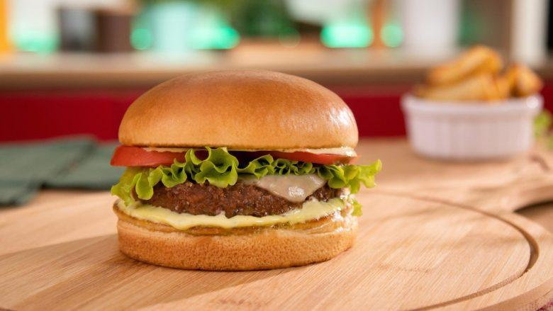
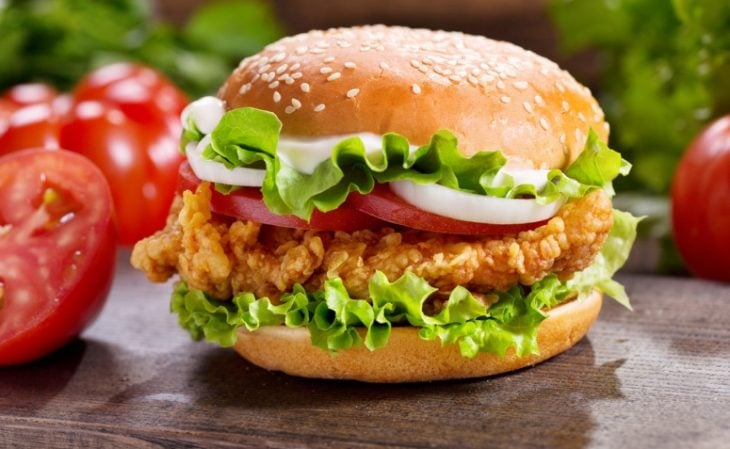
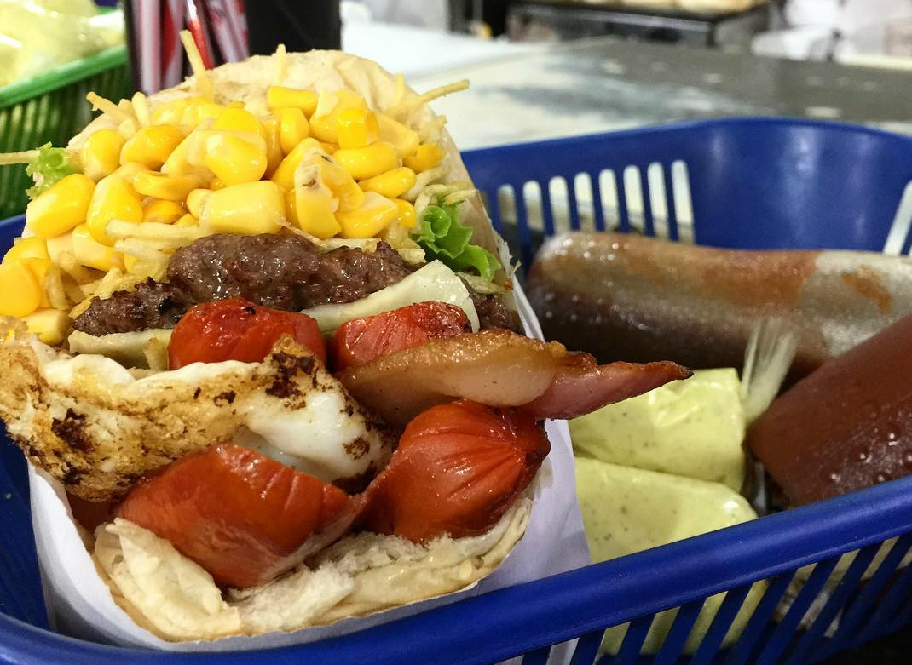

Cardapio
X-BACON
bife bovino, bacon, queijo prato, alface, tomate.
Vegetariano
bife de soja, mussarela, alface e tomate.
X-COCO
th="300px"
Frango empanado, alface, toamte e cebola
X-TUDO
bife bovino,bacon, salsicha, ovo, mussarela,batata palha, milho, alface e tomate.
 bife bovino, bacon, queijo prato, alface, tomate.
bife bovino, bacon, queijo prato, alface, tomate.